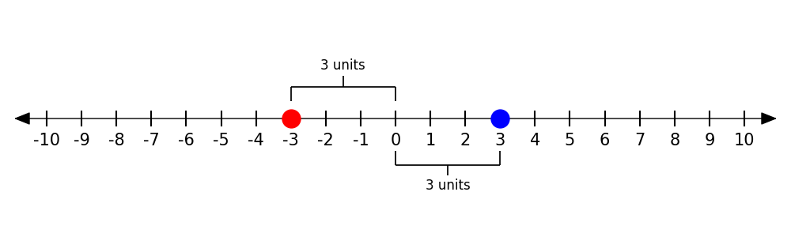
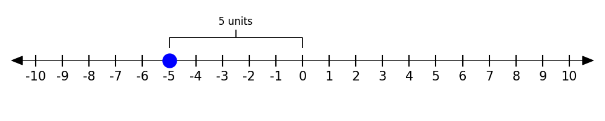
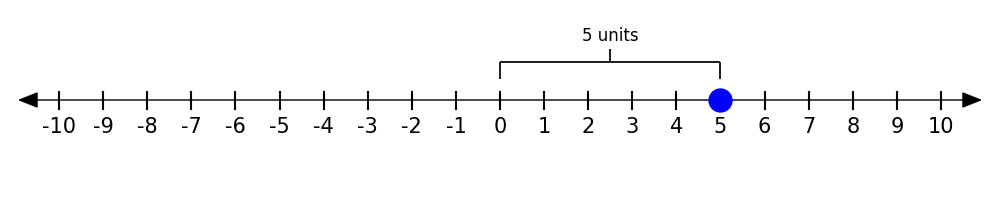
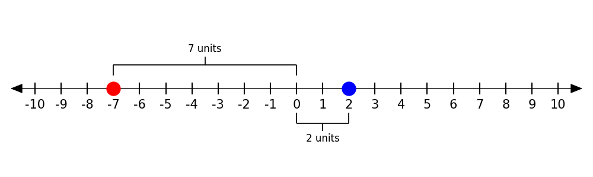
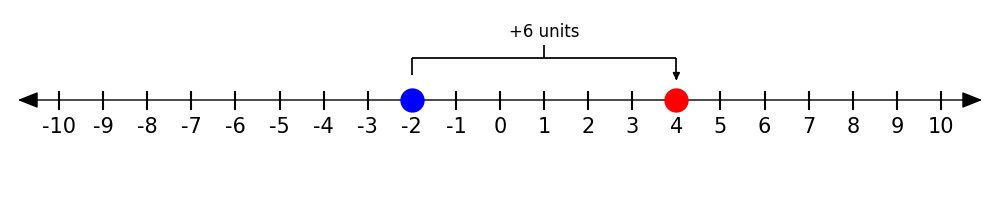

1.1 Integers & Number Lines
Did you know that all of mathematics is actually built up from simple things like counting? Even advanced topics like algebra and calculus are just clever ways of organizing and extending basic ideas — like moving forward and backward on a number line.
In this lesson, we’ll use the number line not just to count, but to add, subtract, and compare positive and negative numbers. That might sound basic, but it’s the foundation of nearly everything else you’ll do in Algebra.
Negative numbers can be tricky, especially when the rules don’t always match what your gut tells you. But if you can master the way they work on the number line — including things like opposites, absolute value, and comparison — you’ll be setting yourself up for success in the rest of the course.
üî• Warm-Up
Answer as best you can – even if you aren’t sure!
- What is the opposite of \(6\)?
- Which is greater \(-4\) or \(-9\)?
- What is the absolute value of \(-8\)?
- Fill in the blanks with the missing numbers:
…, \(-3\), __, \(-1\), \(0\), __, \(2\), \(3\), … - Which is farther from \(0\): \(-7\) or \(5\)?
üë• Learn Together
1.1.1 The Number Line Is More Than Just Counting
You already know how to count — \(0\), \(1\), \(2\), \(3\), and so on. The number line extends that idea in both directions.
Let’s draw a number line from \(-10\) to \(10\)
Here, every tick mark is an integer — a whole number.
- Numbers to the right of zero are positive
- Numbers to the left of zero are negative
We can use this number line to see what happens when we add, subtract, or compare numbers.
The answer is not \(2\)! There are infinitely many numbers between \(3\) and \(5\). Here are two number lines that might help convince you. 

1.1.2 Understanding Opposites
Let’s look at a pair of numbers, \(3\) and \(-3\).
These are called opposite numbers. They are the same distance from zero but on opposite sides of it.

1.1.3 What Is Absolute Value?
Absolute value (\(|x|\)) measures the distance from zero, no matter the direction.
Take a look at the number \(-5\). The number line shows that it’s absolute value is \(5\) because it is \(5\) units away from zero. 
You can see that \(|5|\) is also \(5\) for the same reason! 
1.1.4 Comparing Integers
We can also use the number line to compare values.
Let’s compare \(2\) to \(-7\). 
Ask yourself:
- Which number is farther to the right?
- Which number is closer to 0?
- Does absolute value change the comparison?
You can see from the number line that \(2 > -7\) because \(2\) is to the right of \(-7\). But \(|-7|>|2|\), that is \(-7\) has a greater absolute value than \(2\) because \(-7\) is further from zero.
1.1.5 Number Lines and Arithmetic
We can also use the number line to model adding and subtracting integers.
- To add a positive number, move right
- To add a negative number, move left
Examples:
Addition: \(-2 + 6 = 4\) 
Subtraction: \(4 - 7 = -3\)

Adding a negative: \(2 + (-5) = -3\)

Subtracting a negative: \(2 - (-3) = 5\)

Let me know if you’d like to:
- Add some interactive prompts (checkboxes or “Reveal” buttons)
- Break this into smaller sub-lessons
- Style these number lines with your custom Python tool
- Add a partner or board activity here before the practice
Ready when you are to build the “Practice On Your Own” section or expand this into a printable resource.
✍️ Practice On Your Own
üß≠ A. Locate and Label
Plot the following integers on a number line: –10, –3, 0, 4, 9, –7
üëâ [INSERT: blank number line ‚Äì12 to 12]
üÜö B. Compare Using >, <, or =
- –4 ___ –9
- –3 ___ 0
- |–5| ___ 5
- –|–6| ___ 6
- –7 ___ –|8|
- –2 – 3 ___ –7
- |–3 – 6| ___ 9
üîÅ C. Opposites and Absolute Value
Fill in the blank:
- The opposite of –6 is ___
- The opposite of 0 is ___
- |–12| = ___
- |–3| + |–5| = ___
- –(–4) = ___
- |3 – 9| = ___
⚖️ D. Reasoning Practice
True or False? Justify with a sentence or sketch a number line.
- –3 > –9
- |–7| = –|7|
- The opposite of |–5| is –5
- –(–8) = |8|
üå°Ô∏è E. Contextual Word Problems
The temperature was –12°F. It warmed up 20 degrees. What’s the new temperature?
A diver is 45 feet below sea level. She goes down another 30 feet. How deep is she?
Your bank account is at –$8. You deposit $5. What’s your new balance?
✅ Answer Key (faded or flipped)
A: Labelled on number line B: >, <, =, <, >, >, = C: 6, 0, 12, 8, 4, 6 D: T, F, F, T E: 8°F, –75 ft, –$3
Would you like this exported as Quarto .qmd with stylized headings, tooltips, and number line placeholders? I can also start wiring in your plotting code or build a .py helper file with reusable number line functions if you want this production-ready.